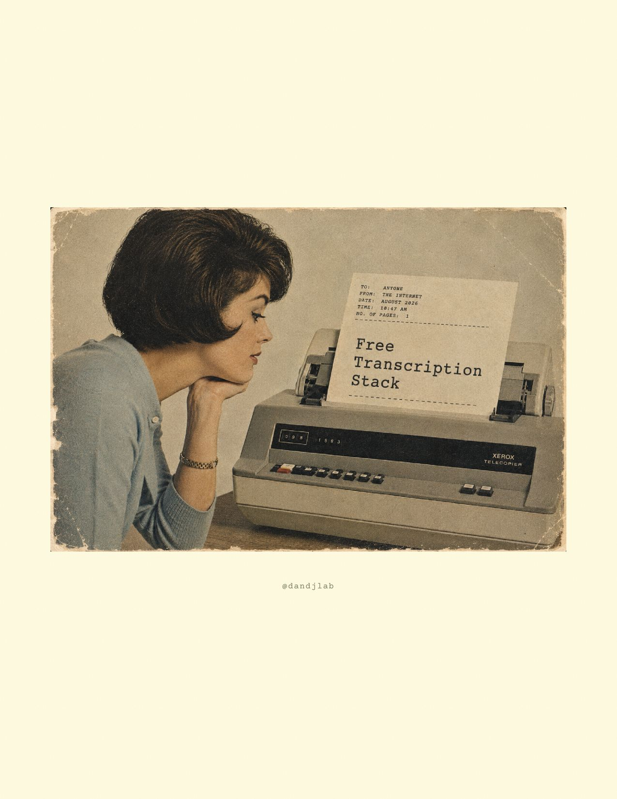
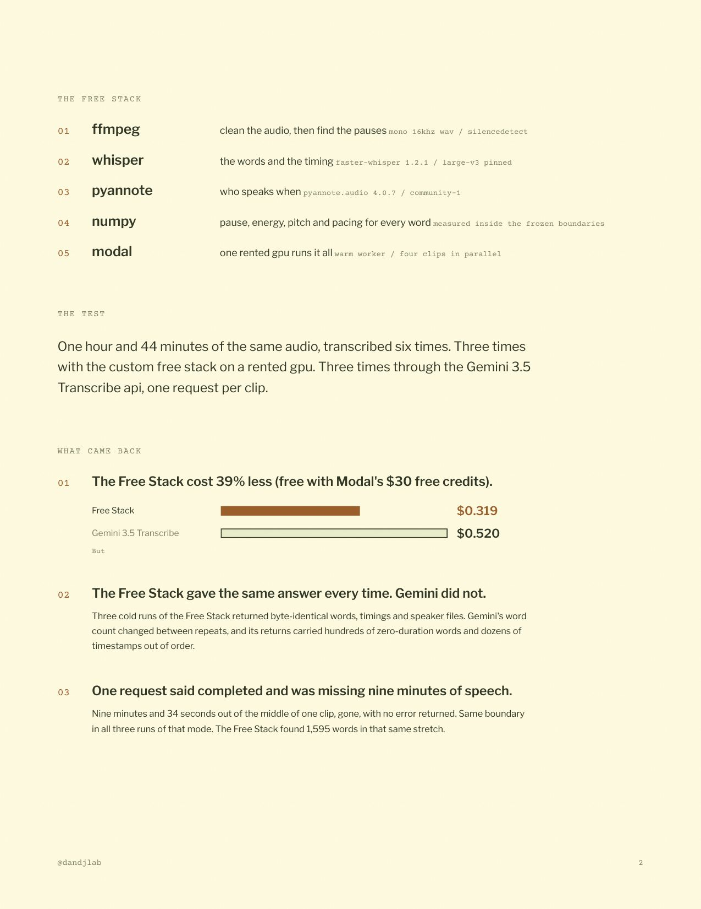
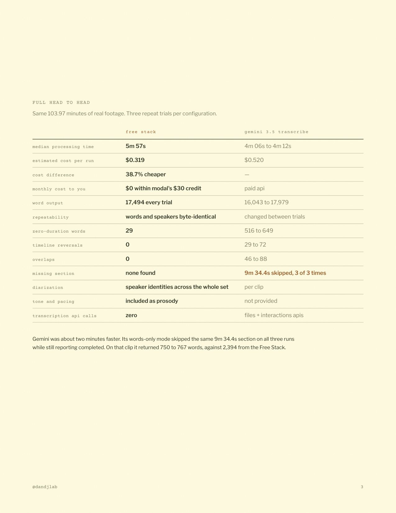
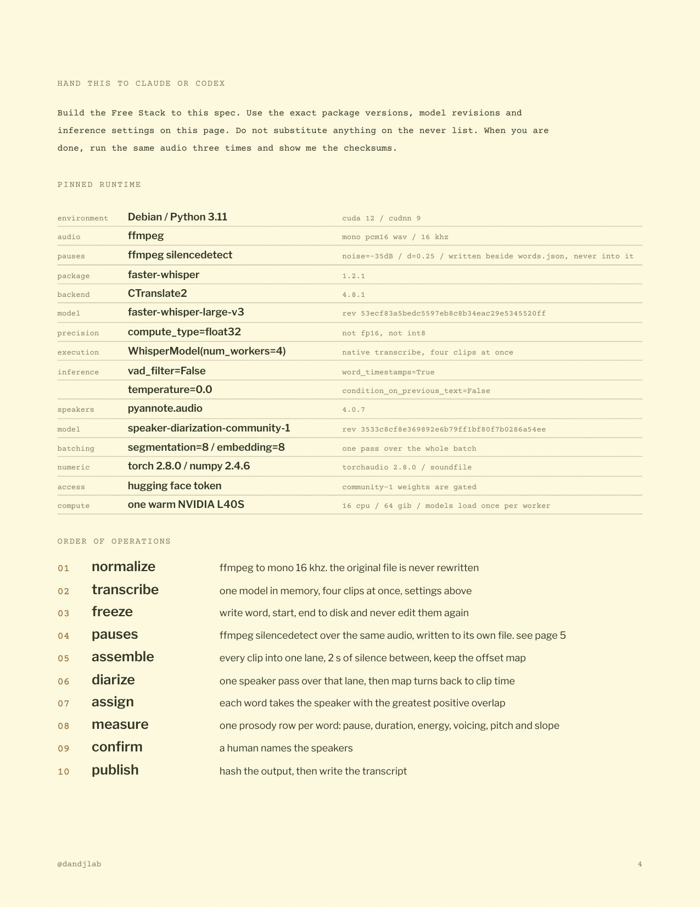
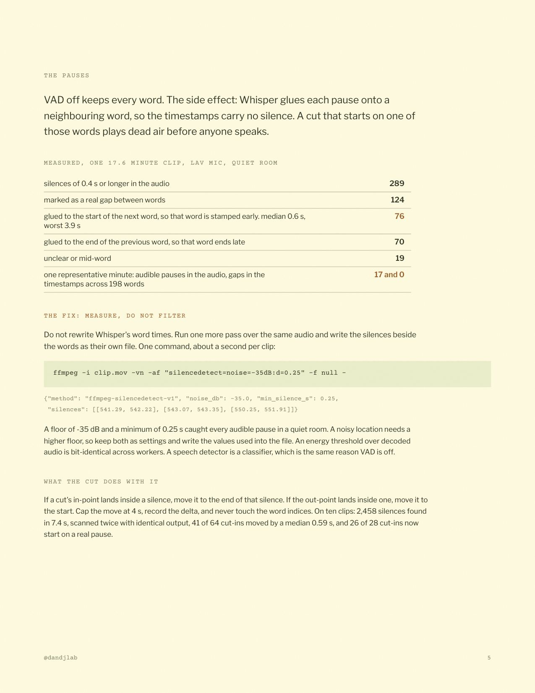
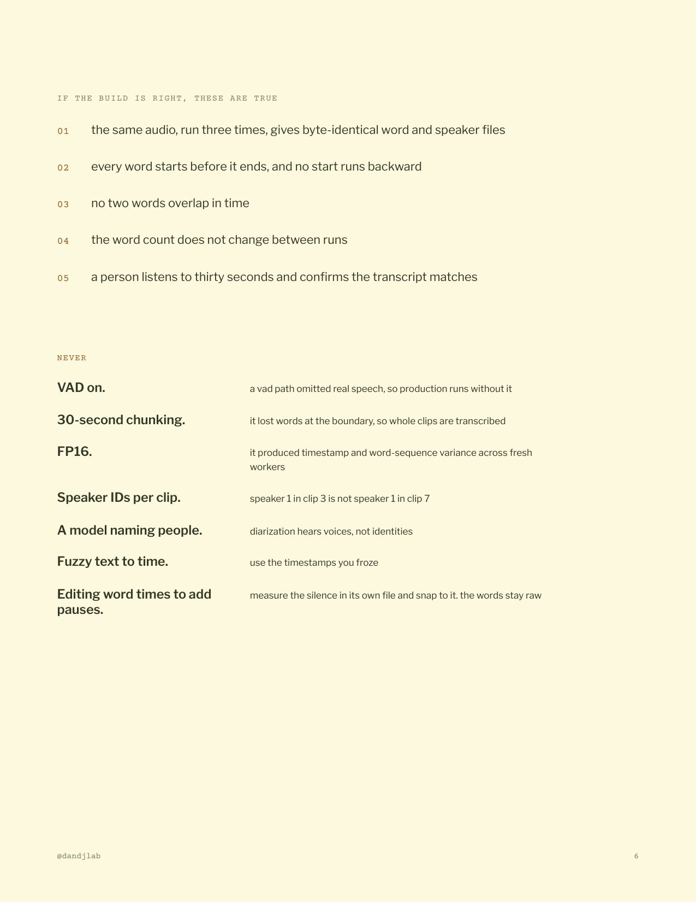

FREE TOOLS, WIRED IN THE RIGHT ORDER
Free Transcription Stack
Four open-source tools on one rented GPU, tested on the same audio against Gemini 3.5 Transcribe. It cost 39% less, gave the same answer three times out of three, and never lost nine minutes of speech. Six pages, including the ffmpeg trick that puts the pauses back. Read it right here, or take the PDF.
opened this from instagram? to save the pdf, tap the three dots, open in browser, then share.
the same spec as text, for pasting into claude or codex: README
the same spec as text, for pasting into claude or codex: README

1 / 6

2 / 6

3 / 6

4 / 6

5 / 6

6 / 6
made by @dandjlab
not affiliated with google, modal, systran, or pyannote. source audio is private and not included.
not affiliated with google, modal, systran, or pyannote. source audio is private and not included.